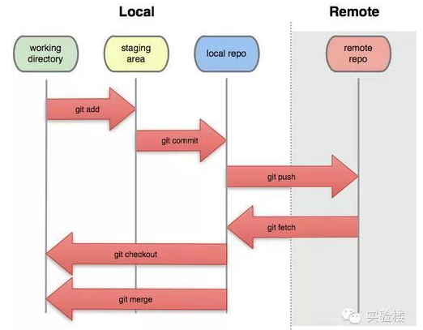

Git使用基础篇
笔记来自实验楼整理
1、Git是什么
Git在Wikipedia上的定义：
它是一个免费的、分布式的版本控制工具，或是一个强调了速度快的源代码管理工具。Git最初被Linus Torvalds开发出来用于管理Linux内核的开发。每一个Git的工作目录都是一个完全独立的代码库，并拥有完整的历史记录和版本追踪能力，不依赖于网络和中心服务器。
Git的出现减轻了许多开发者和开源项目对于管理分支代码的压力，由于对分支的良好控制，更鼓励开发者对自己感兴趣的项目做出贡献。
其实许多开源项目 包括Linux kernel, Samba, X.org Server, Ruby on Rails，都已经过渡到使用Git作为自己的版本控制工具。
对于我们这些喜欢写代码的开发者嘛，有两点最大的好处：
- 我们可以在任何地点(在上班的地铁上)提交自己的代码和查看代码版本;
- 我们可以开许许多多个分支来实践我们的想法，而合并这些分支的开销几乎可以忽略不计。
2、如何初始化Git版本库
Git通常有两种方式来进行初始化:
git clone: 这是较为简单的一种初始化方式，当你已经有一个远程的Git版本库，只需要在本地克隆一份；
例如'git clone git://github.com/someone/some_project.git some_project'命令就是将'git://github.com/someone/some_project.git'这个URL地址的远程版本库完全克隆到本地some_project目录下面
git init和git remote：这种方式稍微复杂一些，当你本地创建了一个工作目录，你可以进入这个目录，使用'git init'命令进行初始化，Git以后就会对该目录下的文件进行版本控制，这时候如果你需要将它放到远程服务器上，可以在远程服务器上创建一个目录，并把可访问的URL记录下来，此时你就可以利用'git remote add'命令来增加一个远程服务器端，
例如'git remote add origin git://github.com/someone/another_project.git'这条命令就会增加URL地址为'git: //github.com/someone/another_project.git'，名称为origin的远程服务器，以后提交代码的时候只需要使用 origin别名即可
3、常用命令
主要命令如图：
基本命令 git init ：初始化仓库 git add \<filename> ：添加未跟踪文件到暂存区 或 添加修改的文件到暂存区 git rm \<filename> ：将文件从git跟踪列表中删除 git commit -m 'commit log' ：提交一个版本到git git log ：查看所有的提交历史记录 git status ：查看当前git的状态 git checkout -- \<file> ：撤销工作目录文件的修改 git reset HEAD \<file> ：取消暂存
版本管理 git reset --hard HEAD^ ：版本回退上一个版本 git reset --hard HEAD^^ ：版本回退上上个版本 git reset --hard HEAD~100 ：版本回退前一百个版本 git reflog ：查看操作记录，可以找到所有历史commit * git diff HEAD -- \<file> ：命令可以查看工作区和版本库里面最新版本的区别
远程管理 git clone git@github.com:michaelliao/gitskills.git ：将远程库下载下来 git remote add origin git@server-name:path/repo-name.git ：添加远程库地址 git push -u origin master ：提交的远程库 git remote -v：查看远程库信息 git push origin branch-name：从本地推送分支，如果推送失败，先用git pull抓取远程的新提交 git checkout -b branch-name origin/branch-name：在本地创建和远程分支对应的分支，本地和远程分支的名称最好一致 * git branch --set-upstream branch-name origin/branch-name：建立本地分支和远程分支的关联 vgit pull：从远程抓取分支，如果有冲突，要先处理冲突
分支 git branch：查看分支 git branch \<name>：创建分支 git checkout \<name>：切换分支 git checkout -b \<name>：创建并切换分支 git merge \<name>：合并某分支到当前分支 git branch -d \<name>：删除分支 * git log --graph：命令可以看到分支合并图
在实际开发中，我们应该按照几个基本原则进行分支管理： 首先，master分支应该是非常稳定的，也就是仅用来发布新版本，平时不能在上面干活； 那在哪干活呢？干活都在dev分支上，也就是说，dev分支是不稳定的，到某个时候，比如1.0版本发布时，再把dev分支合并到master上，在master分支发布1.0版本； 你和你的小伙伴们每个人都在dev分支上干活，每个人都有自己的分支，时不时地往dev分支上合并就可以了。
标签 Tag
git tag \
4、一些命令的过程理解
将 Current working directory 记为 工作目录(1)
将 Index file 记为 暂存区(2)
将 Git repository 记为 代码仓库(3)
他们之间的提交层次关系是 (1) -> (2) -> (3)
git add完成的是(1) -> (2)
git commit完成的是(2) -> (3)
git commit -a两者的直接结合
从时间上看，可以认为(1)是最新的代码，(2)比较旧，(3)更旧 按时间排序就是 (1) <- (2) <- (3)
it diff得到的是从(2)到(1)的变化
git diff –cached得到的是从(3)到(2)的变化
git diff HEAD得到的是从(3)到(1)的变化
下面2张图可以直观的帮助你理解：
